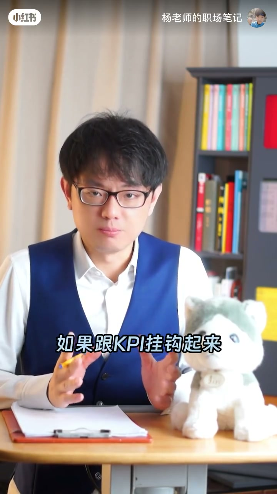
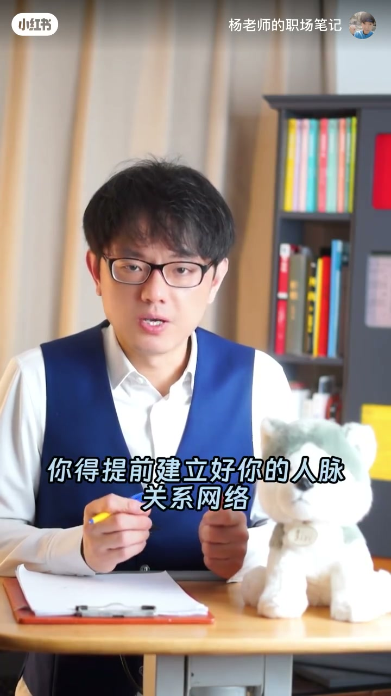
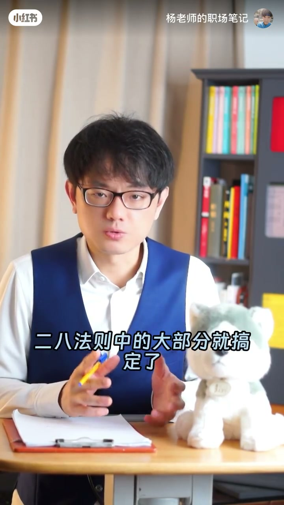

01
中文
推不下去的事，大概率都跟KPI没有关系。
EN
Tasks that stall almost never connect to anyone's KPIs.
表达提示KPI：key performance indicator

Scene English · 视频学习
Why Nothing Gets Done at Work
🎧 语音讲解
Why things stall
情境讲者指出推不动的事都不挂KPI，没有利益绑定大家凭什么配合你。
推不下去的事，大概率都跟KPI没有关系。
Tasks that stall almost never connect to anyone's KPIs.
表达提示KPI：key performance indicator
如果跟KPI挂钩起来，不用你推，大家都会自己卷自己。
Once it's tied to their KPIs, you won't need to push — everyone competes on their own.
表达提示自己卷自己：compete on your own
大家心里面会想：办你的事，就没有时间办自己的事情。
Deep down they think: if I do your task, I won't have time for my own.
表达提示亏本买卖：a losing deal
推不动=没挂上对方利益
让对方为「他的事」着急

Three ways to move things forward
情境讲者给出三个解法：利益挂钩、经营人情、拆解任务。
没有人有义务配合你，除非把我的事变成我们的事。
No one is obligated to help you — unless you turn my problem into our problem.
表达提示变成我们的事：make it a shared problem
要么挂钩他的利益，要么给他造成风险，请你二选一。
Either tie it to his interests or create a risk for him — pick one.
表达提示挂钩利益：tie to interests
把任务拆解到实习生都能做的傻瓜程度，然后再交给他们。
Break the task down until even an intern can do it, then hand it over.
表达提示拆解任务：break down the task
推动力=利益绑定，不是道理
降低对方的启动成本

If you must pick one: tie it to interests
情境讲者强调三点做好就搞定大部分问题，并给出自己的选择。
请先把这三点做好：第一利益挂钩，第二欠你人情，第三拆解任务。
Master these three first: align interests, bank favors, and break tasks down.
表达提示欠你人情：owe you a favor
这三点都做到，二八法则中的大部分就搞定了。
Nail all three and you've solved most of the 80/20 problems.
表达提示二八法则：the 80/20 rule
如果资源有限只能选一条，我选利益挂钩。
If you can only pick one with limited resources, I'd pick aligning interests.
表达提示资源有限：limited resources
杠杆从利益开始
多数问题=少数杠杆
表达「把事变成我们的事」
表达「挂钩利益」
表达「欠人情」
表达「拆解任务」
挂钩→tie to，比 hang on 更地道。
人情→favor，不是 relationship。
拆解→break down，不是 disassemble。
自己卷自己→internal competition。